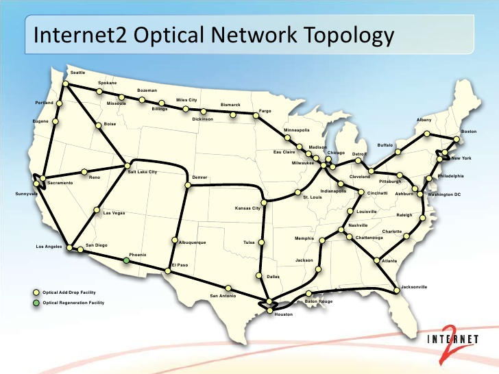
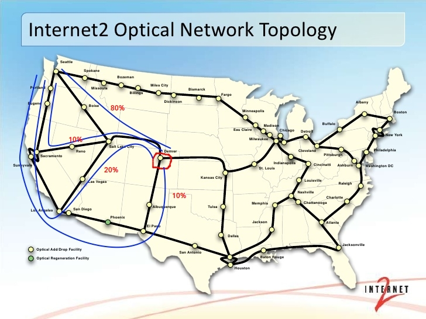
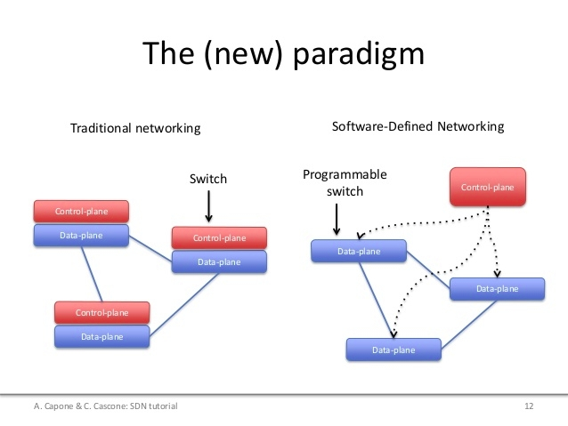
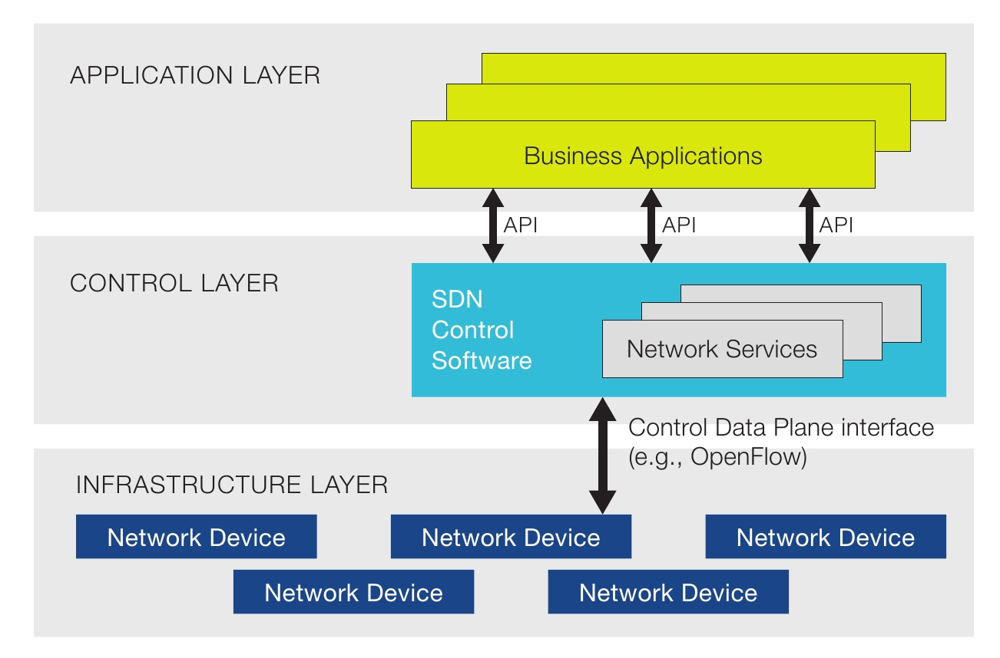
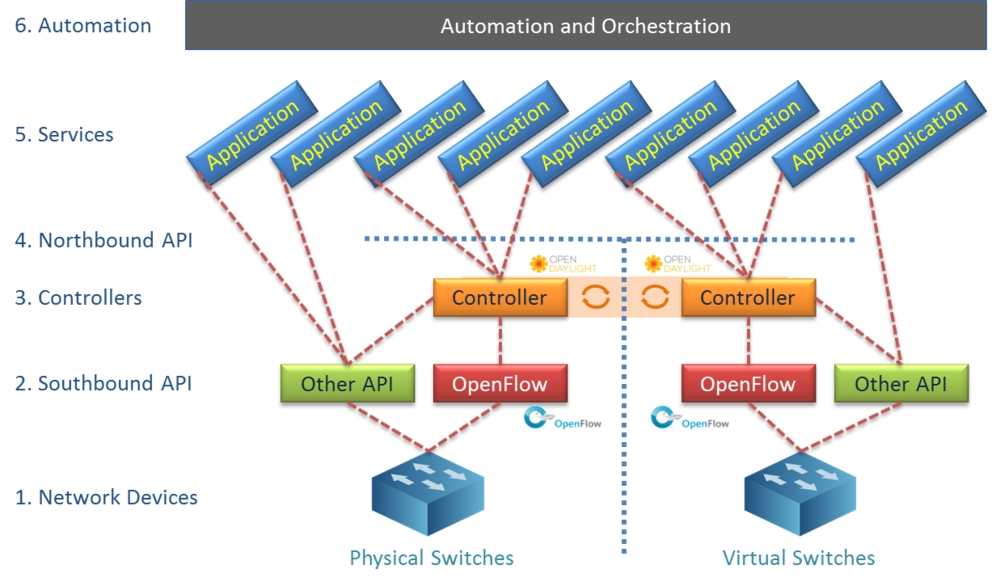

Version: 1.0.1
KNET Solutions (Online Training Centre),
Phone/WhatsApp: +919445042007
we provide Academic SDN Project assistance/guidance.
SDN Theory1. SDN UsecasesA. Openflow specific usecasesB. Automated Service Delivery: What is dynamic VPN?C. Cloud and NFV: Tenant or Network wide PolicyService Function ChainQoSInter Datacenter connection D. Network Resources Optimization (NRO): Problem statement:Solution: E. Visibility and Control: 2. SDN Introduction3. SDN Value proposition4. Six Characteristics of SDN5. SDN ArchitecutreSDN Networking Devices / Network Infrastructure: SDN Controller: SDN Applications: 6. SDN Controllers overview:POX RYU OpenDayLight ONOS7. Opensource Infrastructure Orchestrator (Testbed)MininetKnetOpenvswitch8. References
Cost effective hardware device, which can be work as a any networking device (L2 to L7) based on the SDN Application activated.
Traditional Networking appliances:
and much more.
Providing on-demand services that may be controlled by the end user or the service provider. Examples include bandwidth scheduling (either calendared or on-demand) or dynamic VPN services.
Todo : Dynamic VPN Image to be placed here
In Recent years, the demand for application specific networks (e.g. video, voice or payment networks) is growing. Therefore operators are looking for a more flexible approach in the form of DynamicVPNs (DVPNs).
DVPNs are private networks over which end-users can communicate which are deployed by their common Service Provider (SP). They differ from normal VPNs in the sense that they can be altered multiple time over their potentially short lifetime. Using DVPNs, SPs can react more rapidly to customer requests to configure, adjust or tear down their VPNs.
Agile service delivery on cloud infrastructure in either the enterprise or service provider environment. The underlay will frequently be OpenStack, and services may be implemented using Network Functions Virtualization (NFV).
Apply the network wide /Tenant wide policy such as
Example:
Chain of VNF Functions
Application Specific Quality of Service either dynamically. Dynamic bandwidth allocation, rerouting etc. Better Quality of experience.
and much more.
Dynamically optimizing the network based on load and state. This is the most common carrier use case as it optimizes the network using the near-real-time state of traffic, topology and equipment. NRO uses a variety of southbound protocols (for example, NETCONF, BGP-LS or OpenFlow) depending on the underlying network. In addition to being used “under the covers” by many telcos and cable operators, this is a top use case for enterprise and financial institutions.
** Example:**
Diagram:

ISPs have a country wide topology ,connecting the cities with high bandwidth links, and multipath connectivity across the topology.
Very often some links are Full and some links are Idle. Static/Manaul rerouting is the current existing solution, This affects the customer traffic as well not efficient one.

Network automation which monitors the entire topology and decides the traffic rerouting based on the given policy . SDN helps to achive this in both SDN Topology , as well as hybrid topology (Mixed of SDN and traditional routers)
Centralized administration of the network and/or multiple controllers. This is sometimes used by carriers or enterprises as a precursor to NRO.
SDN is meant to address the fact that the static architecture of traditional networks is decentralized and complex while current networks require more flexibility and easy troubleshooting.
SDN suggests to centralize network intelligence in one network component by disassociating the forwarding process of network packets (data plane) from the routing process (control plane). The control plane consists of one or more controllers which are considered as the brain of SDN network where the whole intelligence is incorporated.
Control and Data(Forwarding) planes are separated. Moves the Control Plane to the Centralized location, runs on general purpose computer.
Enabling the network control to become directly programmable and the underlying infrastructure to be abstracted for applications and network services. The OpenFlow protocol is a foundational element for building SDN solutions.
Software-defined networking (SDN) technology is an approach to cloud computing that facilitates network management and enables programmatically efficient network configuration in order to improve network performance and monitoring.

Agility - Speed of Spin up the Network Services
Reduced Risk - Policy based networks(per user, per application, per VM)
Operational Efficiency – separataion of control & data planes
Reduced Spend – CAPEX / OPEX

SDN architectures generally have three components or groups of functionality:
The SDN networking devices control the forwarding and data processing capabilities for the network. This includes forwarding and processing of the data path. Example: Openvswitch (openflow protocol)
SouthBound Interface:
Southbound interface is the connection between the controller and the physically networking hardware
The SDN Controller is a logical entity that receives instructions or requirements from the SDN Application layer and relays them to the networking components. The controller also extracts information about the network from the hardware devices and communicates back to the SDN Applications with an abstract view of the network, including statistics and events about what is happening.
Example:
RYU, OpenDayLight, ONOS, FloodLight etc
SDN Applications are programs that communicate behaviors and needed resources with the SDN Controller via application programming interface (APIs). These applications could include networking management, analytics, or business applications used to run large data centers. This is the place for research, innovations, new ideas etc.
A Northbound interface is defined as the connection between the controller and applications.

southbound interfaces openflow, ovsdb, bgp, of-config(?)
northbound interfaces REST
southbound interfaces:
a. openflow b. OF-config c. OVSDB d. NETCONF e. LISP f. BGP g. PCEP h. CAPWAP i. LACP... and much more
northbound interfaces: a. RESTCONF b. REST c. NETCONF d. AMQP(MessageQ)
southbound interfaces: OpenFlow, Netconf, OVSDB, TL1, CLI
northbound interfaces: ??
Open vSwitch is a production quality, multilayer virtual switch licensed under the open source Apache 2.0 license. It is designed to enable massive network automation through programmatic extension, while still supporting standard management interfaces and protocols (e.g. NetFlow, sFlow, IPFIX, RSPAN, CLI, LACP, 802.1ag).